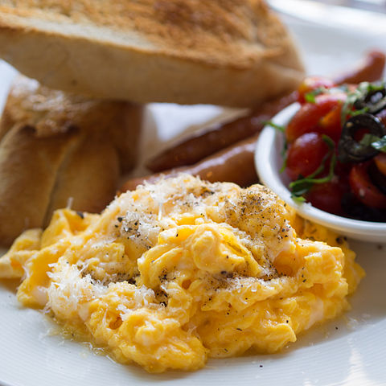

Scrambled Egg

Description
Simple scrambled egg recipe; great for breakfast!
Ingredients
- 4 eggs
- 2 tablespoons of butter
- 2 teaspoons of salt
- 2 teaspoons of pepper
Steps
- Crack for 4 eggs into a pot.
- Add butter to pot.
- Put pot over medium-low heat.
-
Using a rubber spatula continually keep mixing the egg in smooth
circular motions.
- When egg starts to solidify add the salt and pepper.
-
Continue cooking and mixing egg till its at consistency slightly less
than what you'd like. Keep in mind egg continues to cook even when you
turn off heat.
-
Quickly put egg into a plate (to stop it from overcooking) and by
then egg should have cooked to a level you like.
- Enjoy!